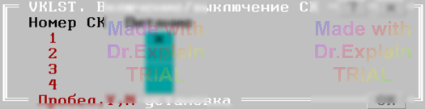

3.1 Включение/выключение стоек коммутации (VKLST)
Утилита предназначена для включения и выключения питания СК. Обычно утилита используется для того, чтобы выключить питание неиспользуемых СК. Дело в том, что при приведении аппаратуры СК в исходное состояние (сбросе) после выполнения программы контроля, теста или утилиты питание включенных СК не выключается. Сделано это для ускорения процедуры старта при перезапуске или запуске следующей программы контроля, теста или утилиты.
Утилита предоставляет меню, показанном на рисунке:

В этом меню состояние питания СК отображается наличием/отсутствием "крестика в квадратике" (питание включено/отключено). Задайте нужное состояние питания СК и нажмите < Enter >. Питание всех СК, имеющихся в конфигурации будет выключено (или включено) в соответствии с установками меню. После этого опять будет предложено меню, показанное на рисунке выше. Вы можете переустановить состояние питания СК и вновь нажать < Enter >. Команда < Esc > осуществит выход из утилиты. Попытка включения питания СК, отсутствующей в конфигурации, вызовет соответствующее сообщение. При старте и завершении данной утилиты приведение аппаратуры СК в исходное состояние не производится.